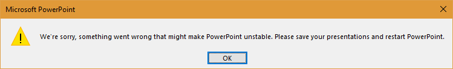

Overview
P3ICLI is a semi-acronym denoting "PowerPoint Picture Insert Command Line Interface", which is a command line tool that programmatically adds pictures, graphical images, captions, and slide titles to Microsoft PowerPoint® presentations. If the choice of this acronym seems odd, try rolling the logical alternative (pppicli) across your tongue.How Does It Work?
P3ICLI requires three input elements:- One or more specially constructed template slides containing graphical objects that specify the exact placement of title text, caption text, and graphics objects.
- Picture/graphic files ('natch).
- A simple text file script that specifies:
- Template file path,
- Slide title and caption text,
- Picture/graphic file placement on the template,
- The sequence point at which an unmodified copy of the template is duplicated so that steps "b", "c", and "d" may be repeated as necessary to create the desired PowerPoint presentation.
Creating A Template
A template is a PowerPoint slide comprised of at least three elements:- An optional title placeholder shape,
- Up to 20 optional caption shapes, and
- Up to 20 rectangle shapes that denote the coordinates where picture/graphic files are to be placed. The rectangles may also specify a nonzero text rotation angle, which is subsequently applied to inserted pictures/graphic files. This latter feature is only supported by versions of PowerPoint newer than Office 2000 (e.g., Office 2003, Office 2007, etc.).
Template Shape Notes
- Title placeholder shapes are included on many of the stock layout slides supplied with each installation of Microsoft Office and can be readily recognized by the label "Click to add title".
- Any PowerPoint shape that includes a "text frame" may be used as a caption shape. Put another way, any shape capable of displaying text is acceptable. However, it's important to point out that Text Box shapes expand as necessary to accommodate text of any practical length, while non-Text Box shapes do not.
- Rectangle shapes are manually added to a slide via the PowerPoint Office Ribbon interface.
- A caption shape need not be physically located within the proximity of a picture shape—P3ICLI assumes no shared association between pictures and captions. Thus, it's possible for a template slide to consist of nothing but caption shapes.
The P3ICLI release distribution includes an example template called sampleTemplate.potx, which is shown in the following screen shot:

The text placed within the frames of each of these nine shapes (i.e., "title", "Rect 1", "Pic 1", "Pic2", "Caption 1", "cap3" etc.) is irrelevant to P3ICLI, but does serve as a useful visual cue when formally labeling template shapes (see next topic).
- At the user's discretion, other shape types and effects may be placed on the template, but they are ignored by P3ICLI.
- The PowerPoint template file need not be restricted to files that end in the .potx suffix. A template could just as easily be constructed from a file with a .pptx suffix.
Labeling Template Shapes (Office 2010)
Since a variety of shapes/effects might be placed on a template, some mechanism is required to uniquely identify P3ICLI's title, caption, and rectangle shapes. That mechanism is the shape's Web Alternative Text (aka Alt Text) string. Accessing a shape's Web Alternative Text in Office 2010 requires these steps:- Select and right-click the shape,
- Click either the "Size and Position" or "Format Shape" menu items,
- Click the "Alt Text" button in the dialog box that pops up.
Figure 2A displays an example Office 2010 Alt Text screen shot.

Labeling Template Shapes (Office 2013)
Office 2013 presents a much different interface than Office 2010. Accessing a shape's Web Alternative Text in this version entails the following steps:- Select and right-click the shape.
- Click the "Size and Position" menu item, which opens a pinned dialog box in PPT's right hand window pane.
- Collapse (minimize) the displayed "SIZE" data by clicking the "SIZE" menu.
- Click the "ALT TEXT" menu in the right hand window pane.
Figure 2B displays an example Office 2013 Alt Text screen shot.
Labeling Template Shapes (Office 2016/2019)
Office 2016 and 2019 offer yet another interface for modifying Alt Text. Accessing a shape's Web Alternative Text in these versions entails the following steps:- Select and right-click the shape.
- Click the "Edit Alt Text..." menu item, which opens a pinned dialog box in PPT's right hand window pane.
Refer to Figure 2C for an example screen shot.

Required Web Alternative Text Strings
The following table specifies required P3ICLI Web Alt Text strings:
| P3ICLI Template Shape Type |
Alternative Text String |
Identifies |
|---|---|---|
| Title | title | optional title placeholder shape |
| Rectangle #1 | pic1 | picture shape #1 |
| Rectangle #2 | pic2 | picture shape #2 |
| ... | ... | ... |
| Rectangle #20 | pic20 | picture shape #20 |
| Caption #1 | cap1 | text caption shape #1 |
| Caption #2 | cap2 | text caption shape #2 |
| ... | ... | ... |
| Caption #20 | cap20 | text caption shape #20 |
It should be emphasized that text case matters. Use the exact case shown in Table 1 above. (e.g., "title", not "TITLE" or "Title").
Naming Template Slides
The simplest P3ICLI template "package", for lack of a better term, is comprised of a single PowerPoint slide populated with one or more template shapes. But it's difficult to create a complex presentation based on a single slide. Fortunately, P3ICLI provides an insert slide command that provides runtime access to an unlimited number of template slides.The insert slide command references template slides by either their ordinal position within a PowerPoint file (i.e., slide #1, slide #2, etc.) or by a user-defined name. The latter approach facilitates mnemonic recall and self-documenting scripts. Ordinal naming, on the other hand, is brittle and subject to failure when template slides are reordered or deleted.
A template slide is named by adding a PowerPoint comment to the slide and including comment text that appropriately identifies the template. See Figure 3 for an example of a named slide.

Slide Insertion Example Syntax
The single slide template shown in Figure 3 could be accessed by P3ICLI using either of these two equivalent commands:
insert slide 1 from template c:\path\to\template.pptx
insert slide "2up, no caps" from template c:\path\to\template.pptx
Template Slide Naming Notes
- The comment object that names a template slide is deleted following its insertion into a PowerPoint presentation via the insert slide <qstring> command. I.E., slide names do not appear in the final presentation created by P3ICLI. But comment deletion does not take place when template slides are referenced by ordinal number. Take note that the remove comments script command supports arbitrary comment removal.
- P3ICLI trims leading and trailing white space from a slide's comment text before performing a case insensitive string equality test against the similarly trimmed target slide name specified via the insert slide <qstring> command. However, P3ICLI does not compress the white space characters that delimit the words of a slide's name. This can lead to seemingly vexing script behavior. For example, suppose a slide's comment includes the text "3up, 1 cap", but a script erroneously refers to this slide as "3 up, 1 cap". In this case, the two names appear almost identical, but do not match due to the extra space mistakenly inserted between "3" and "up".
The remainder of this manual describes script syntax and program invocation.
Syntax/Semantics Notation
| Notation | Explanation |
|---|---|
| {a | b} | Choose "a" or "b". |
| <value> | User-specified value. The semantics of value are described in the discussion of the affected script command. |
| [element] | Syntax element is optional. |
| ... | Preceding syntax element may be repeated zero or more times. |
| 'element' | Syntax requires use of literal element.
Used when the command syntax requires a symbol included in
this notation. Example syntax:
which says that "insert [xyzzy]" is a valid command (the single quotes
remove any special syntactical meaning associated with the
bracket characters).
|
| Notation | Explanation |
|---|---|
| PPT | Abbreviation for PowerPoint. |
| (R) | Script command requires Running, OLE-connected PPT instance. |
| (T) | Script command requires active Template slide (i.e., must be preceded by open template or insert slide command). |
Script File Format
A script file is comprised of command elements and optional comments, one command per logical scriptfile line. Command elements include:| Element | Description |
|---|---|
| defined keywords | Examples: open, slide, sleep |
| <int> | Integer, optionally preceded with a minus sign (-) . |
| <uint> | Unsigned integer. |
| <filename> | Unquoted character string specifying a file path. |
| <folder> | Unquoted character string specifying a folder path. |
| # comment | Annotate script with comments—blank script
lines are also accepted. Inline comments
are supported (see 2nd example). Examples:
|
| <qstring> | Quoted string, which may be delimited with
double or single quotes. Supported escape sequences include:
\r
insert carriage return, useful for forcing a title break \n insert newline \t insert tab \' insert literal single quote \" insert literal double quote \\ insert \
Examples:
|
Scripting Syntax
| Script Command | Description |
|---|---|
| cap<uint> <qstring> | Set the text of the specified caption shape
(R) (T). Once set, the shape is
marked "modified", which has implications for the
clean command.
The valid range of <uint> is 1-20.
Example:
Data embedded within <qstring> may be encoded in either the UTF-8 or ANSI character sets, as specified by the encoding command. |
| cap<uint> '<'cleaned'>' | Mark the specified template shape as
"modified", thereby protecting it from
the clean command.
(R) (T).
The valid range of <uint> is 1-20.
Example:
which ensures that cap2 is not removed by a subsequent clean command. This idiom is useful when circumstances require manually adding caption text at a later time. |
| cap<uint> move <int>','<int> | Move the specified caption shape to a new location on
the current slide (original template slide remains
unchanged)
(R) (T).
This command's two numerical arguments
reflect the affected shape's new left and top
coordinates (scaled in points, 72 points per inch).
Example:
Which moves cap3 to a location 2.75 inches from the left edge of the current slide and 1.75 inches below the slide's top edge. Refer to the topic Dynamically Modifying Text Shapes for further details. |
| cap<uint> size <uint>','<uint> | Resize the specified caption shape while maintaining its
current location on
the current slide (original template slide remains
unchanged)
(R) (T).
This command's two numerical arguments
reflect the affected shape's new width and
height
(scaled in points, 72 points per inch).
Example:
Which resizes cap1 as a 1in wide by 2in tall rectangle. Cap1 does not move. Refer to the topic Dynamically Modifying Text Shapes for further details. |
| clean {slide | pics | caps} |
With respect to PPT's currently active
slide, remove unmodified shapes known to
P3ICLI. (R) (T).
Refer to the table
Shapes Versus Alternative Text Strings
for a description of the labeling that
identifies P3ICLI shapes on a PPT template slide.
See also the descriptions of these commands:
removes all unmodified picture, caption, title shapes. The command:
only affects unmodified picture shapes (title and caption shapes ignored). The command:
only affects unmodified caption shapes (title and picture shapes ignored). |
|
copy src fmt {on | off}
copy source format {on | off} |
Specifies whether P3ICLI copies background slide
formatting information (e.g., design, color scheme, gradients,
etc.) from the "source" slide during the execution
of an insert slide command.
Default is off. Example:
Note 1: the state of this P3ICLI parameter is both order dependent and persistent. Place this command before a targeted insert slide command. Note 2: user-defined textures cannot be copied for any version of PPT released prior to Office 2007, since no PPT programmatic support exists for this slide formatting feature. |
|
custom property <qstring>'='<qstring>
custom property <qstring>'='<int> custom property <qstring>'='{yes | no} |
Add a Text, Number, or Yes/No custom property to the
presentation that P3ICLI is creating
(R) (T).
Additionally, if this notation is used, a Date
custom property is added:
If this notation is used, the named property is deleted:
Examples:
Note 1: the accepted range of <int> values is 2147483647 to -2147483648, with the caveat that PPT displays negative numeric values < -999999 in an inexact floating point format. Note 2: deleting a nonexistent custom property is not an error. |
|
delete image files {on | off}
dif {on | off} |
Specifies whether P3ICLI automatically deletes image files
specified via the
pic<uint> <filename>
command. Default is off, which is to say, that
P3ICLI normally leaves image files untouched. Example:
Note 1: see also ignore <filename> . Note 2: the topic Cleaning Up Temporary Images Files documents use of this command. |
| {dup | duplicate} template | Duplicate an unmodified copy of the template slide and make that duplicate PPT's active slide. (R) (T). This command adds a new, unmodified template slide to the current presentation. |
| encoding {ansi | utf8} | Specifies whether P3ICLI transmits
ANSI or
UTF-8 character codes via these commands:
Example:
Note 1: UTF-8 provides access to a vast collection of symbols not supported by ANSI. Note 2: for the sake of backwards compatibility with existing P3ICLI scripts, the default encoding is ansi. Note 3: the state of this P3ICLI parameter is both order dependent and persistent. Place this command before any cap<uint> or title command that includes caption/title string data not compatible with the current encoding. Note 4: if garbage is displayed instead of Unicode characters, consult these Encoding Hints. |
| {exit | halt | quit} | P3ICLI exits immediately. Useful script debugging aid. |
| ignore <filename> | Protects <filename> from deletion when
delete image files
is on. Example:
The topic Cleaning Up Temporary Images Files documents use of this command. Note that ignore supports the use of relative file paths. Refer to the Relative Image and Template File Paths topic for further discussion. |
|
insert slide <uint> from template <filename>
insert slide <qstring> from template <filename> |
The <uint> version of this command
inserts template slides by ordinal number
from <filename>
into a new or existing PPT
instance.
The <qstring> version of this command
inserts template
slides by name.
Unlike the open command, insert only creates a new presentation when PPT is not currently running. The insert command:
Examples:
insert slide 3 from template c:\ppt\tmplt.potx
Users transitioning to Office 2013/2016 from an earlier version should study the slide size command. |
| kill ppt {save | discard} | Close all running PPT instances. The
save/discard arguments specify whether
unsaved changes in currently open presentations are
saved or discarded. It's not an error to issue this
command when no PPT instances exist.
It's worth noting that kill ppt save exhibits quirks with respect to modified presentations that have never before been saved. To wit:
Consequently, it's fairly important to precede kill ppt save with a save as command. |
| list geometries [<qstring>] | For each caption, picture, and title shape resident on
the original
template slide, list its dimensions and
position scaled in points (72 points to the inch)
(R) (T). Additionally, list the
template slide's dimensions (width and height), scaled
in points.
The listing is repeated for the current slide
(the contents of which might have been modified by
various
{size|move} commands),
thus allowing a quick comparision of the
geometries associated with the current
slide versus the unmodifid template slide.
The optional <qstring> argument adds a user-defined annotation that precedes this command's listing. Listing format sans <qstring> annotation:
Example command usage that includes a <qstring> annotation:
list geometries
"1 title, 1 pic tmplt"
Refer to the topics Dynamically Modifying Picture Shapes and Dynamically Modifying Text Shapes for further details. |
| open template <filename> | Open <filename> in a new or existing PPT
instance. This command:
|
| pic<uint> <filename> | Replace the template shape labeled
pic<uint> with the graphic/picture stored
in <filename>.
(R) (T).
The valid range of <uint> is 1-20.
A replaced template shape is marked
"modified", which has implications for the
clean command. Example usage:
|
| pic<uint> '<'cleaned'>' | Mark the specified template shape as
"modified", thereby protecting it from
the clean command.
(R) (T).
The valid range of <uint> is 1-20.
Example:
which ensures that pic2 is not removed by a subsequent clean command. This idiom is useful when circumstances require manually adding graphics at a later time. |
| pic<uint> move <int>','<int> | Move the specified picture shape to a new location on
the current slide (original template slide remains
unchanged)
(R) (T).
This command's two numerical arguments
reflect the affected shape's new left and top
coordinates (scaled in points, 72 points per inch).
Example:
Which moves pic3 to a location 3 inches from the left edge of the current slide and 4 inches below the slide's top edge. Refer to the topic Dynamically Modifying Picture Shapes for further details. |
| pic<uint> size <uint>','<uint> | Resize the specified picture shape while maintaining its
current location on
the current slide (original template slide remains
unchanged)
(R) (T).
This command's two numerical arguments
reflect the affected shape's new width and
height
(scaled in points, 72 points per inch).
Example:
Which resizes pic1 as a rectangle 2.5 inches wide by 2 inches tall. Pic1 does not move. Refer to the topic Dynamically Modifying Picture Shapes for further details. |
| pics root {<folder> | '<'none'>'} | P3ICLI prepends the specified root <folder>
to any relative file path specified via a
pic<uint> <filename>
command. The
<none> argument disables this feature.
Note that a relative file path does not begin with a drive designator (e.g., C:), a backslash ('\'), or a UNC prefix ('\\'). The default is <none>. Example:
Which causes P3ICLI to pass these image paths to PPT:
Finally, note that the ignore
command honors the current setting of
pics root.
Refer to the
Relative Image and Template File Paths help topic for
an explanation and example.
|
| remove comments | Arbitrarily remove all comments from the currently active slide. (R) (T). In the case where no comments exist, no error is reported. |
| save as {html | pdf | presentation} <filename> | Save PPT's current, active window contents
to the specified <filename> in either
html, pdf, or presentation format.
(R).
If <filename> exists, it is silently
overwritten. When the save as operation
completes, PPT's active window is closed.
Note that the pdf format is not supported in Office 2003. On the other hand, the html format is not supported in Office 2013 (and presumably, later versions as well) and will elicit a PPT runtime error. Support for the html format in Office 2010 is shaky at best, as many web browsers cannot access anything but the first slide in a multi-slide presentation. PDF seems to be the most reliable alternative file format for Office 2010 and beyond. Example usage:
|
| sleep <uint> | Pause script <uint> milliseconds.
Crude debugging aid. Can also be used as a
synchronizing device on very slow hosts
(see the second example script below). Valid range
is 0-30000 (30 seconds). Example:
|
| slide size {4:3 | default} |
Note: Office 2010 or earlier users should study
this block of
documentation to discern the purpose of the
slide size command, but
ignore the 4:3 argument.
However, the
slide size 16:9 variant
(described next in the syntax table), may prove
useful.
Office 2013 (and later) changed the default slide size dimensions from 720 by 540 to 960 by 540, scaled in points. This translates to a change from 10in wide by 7.5in tall to 13.33in by 7.5in (the former values constitute a 4:3 aspect ratio and the latter 16:9). P3ICLI templates created pre-Office 2013 retain their existing slide geometries when opened with the open template command. But if those same pre-Office 2013 templates are opened in Office 2013 (and later) via an insert slide {<uint>|<qstring>} command, they are automatically expanded to a 13.33in width. If this behavior is objectionable, place a slide size command somewhere before the first insert slide command included in a script. Correct example usage: |
| slide size {16:9 | default} |
Note: This variant of the
slide size
command is N/A for Office 2013 and later.
Users of Office 2010 (or earlier) may want to create templates with a 16:9 slide aspect ratio and use them with their version of PPT, even though the default aspect slide ratio is 4:3. This correct sequence of commands forces a 16:9 slide ratio: Note 2: The open template command ignores slide size. |
| slide size {a4 | <uint>','<uint> | default} | P3ICLI also supports two other slide size variants.
The a4 command argument maps
onto the PPT definition of A4 (10.833in w x 7.5in h, or
780 by 540 points), which is not the same as the ISO A4
standard (8.27in w x 11.69in h). But fear not, users may
select any reasonable slide geometry via the <uint>','<uint>
variant. In this variant, the first integer
represents the width of the slide and the second
represents the height, scaled in points (72 pts/inch).
The minimum value for either parameter is 72 points, which
is silently enforced.
As is true for all variants of this command, slide size must be placed somewhere before the first insert slide command appears in a script. This correct sequence of commands forces a PPT A4 slide ratio: This correct sequence of commands forces a 595w x 842h slide ratio, which corresponds to the ISO A4 international standard: Note 2: The open template command ignores slide size. |
| start ppt [minimized] | Launch PowerPoint, if not already
running—establishes
an OLE-connected instance of PPT. The optional
minimized argument specifies that PPT
starts as a minimized window, which
prevents the application from flashing open as the
topmost, foreground window.
This command is not strictly necessary, since the open template and insert slide commands launch PowerPoint as necessary. |
| templates root {<folder> | '<'none'>'} | P3ICLI prepends the specified root <folder>
to any relative file path specified via an
insert slide or
open template command. The
<none> argument disables this feature.
Note that a relative file path does not begin with a drive designator (e.g., C:), a backslash ('\'), or a UNC prefix ('\\'). The default is <none>. Example:
Which causes P3ICLI to pass these template paths to PPT:
Refer to the
Relative Image and Template File Paths help topic for further
discussion.
|
| third party fix {on | off} | Apply internal workaround(s) for a third party security
application that monitors and disrupts P3ICLI
activities. Currently, the on state ensures that
all insert slide operations
are carried out via a clipboard copy and paste (as opposed
to a direct file copy).
Default is off. Example:
|
| title <qstring> | Set the text of a template's title shape.
(R) (T). Once set, the shape is
marked "modified", which has implications for the
clean command. Example:
Data embedded within <qstring> may be encoded in either the UTF-8 or ANSI character sets, as specified by the encoding command. |
| title move <int>','<int> | Move the title shape to a new location on
the current slide (original template slide remains
unchanged)
(R) (T).
This command's two numerical arguments
reflect the affected shape's new left and top
coordinates (scaled in points, 72 points per inch).
Example:
Which moves the title to a location 4.5 inches from the left edge of the current slide and 0.5 inches below the slide's top edge. Refer to the topic Dynamically Modifying Text Shapes for further details. |
| title size <uint>','<uint> | Resize the title shape while maintaining
its current location on
the current slide (original template slide remains
unchanged)
(R) (T).
This command's two numerical arguments
reflect the affected shape's new width and
height
(scaled in points, 72 points per inch).
Example:
Which resizes the title as a 2in wide by 1in tall rectangle. The title does not move. Refer to the topic Dynamically Modifying Text Shapes for further details. |
P3ICLI Command Line Invocation
p3icli [-hvDEFISX] [-T <msec>] [-W{a|x}:<msec>] [-V <versionfile>] [-l <logfile>] [<scriptfile>...]
where:
| -h | display command line syntax (help) and exit. |
| -v | display program version and exit. |
| -D[n] | enable internal debug messages at optional level "n" (an unsigned integer). Higher levels enable more detailed debugging. Default is level "0". |
| -Ex | send an 'End task' message to all visible instances of windows eXplorer (aka File Explorer) on a Windows 10 host if and only if copy src fmt is on. This switch may also be controlled via an environment variable. Refer to the PowerPoint Instability On Windows 10 topic for further details. By default, the message is not sent. |
| -F | When delete image files is on, force file deletion if the number of errors at program exit is > 0. Refer to the Cleaning Up Temporary Images Files topic for further details. |
| -Ix | Ignore windows eXplorer (aka File Explorer) on a Windows 10 host. This switch may also be controlled via an environment variable. Refer to the PowerPoint Instability On Windows 10 topic for further details. If copy src fmt is on, the default is to warn once (with a lengthy message) when Windows Explorer is running as a visible process. |
| -S | dump accepted syntax on stdout and exit. |
| -X | forces P3ICLI to execute a kill ppt discard command after all script(s) are processed. Useful in a server environment (prevents errant scripts from stranding orphan instances of PowerPoint). |
| -T <msec> |
assumes P3ICLI is running under the Windows Task Scheduler, which
implies that before any <scriptfiles> are processed:
|
| -V <versionfile> | write program version to <versionfile> and exit. |
| -Wa:<msec> | wait <msec> milliseconds after transmitting an Asynchronous PPT command. If unspecified, the default is 80 milliseconds. This parameter may also be configured via an environment variable. Refer to the Fast PC Considerations topic for further details. |
| -Wx:<msec> | wait <msec> milliseconds at program eXit when the -T or -X command line options are in effect. If unspecified, the default is 256 milliseconds. This parameter may also be configured via an environment variable. Refer to the Fast PC Considerations topic for further details. |
| -l <logfile> | record error count and error messages in <logfile> instead of stderr. |
| <scriptfile> | specifies the path to one or more files containing P3ICLI scripting commands. If not specified, commands are read from stdin. |
Example Command Line Invocation
Process one script, errors (if any) listed on stderr:
p3icli my_script.txt
Process two scripts, error(s) listed in user-specified log file:
p3icli -l c:\temp\p3icli_log.txt script1.txt script2.txt
P3ICLI Exit Code
The program's exit code is set to the total number of syntax or runtime errors encountered during the course of command execution.Currently, P3ICLI aborts when 8 total errors are detected.
Log File Format
| Logical File Line Number |
Data |
|---|---|
| 1 | P3ICLI exit code (i.e., total error count) |
| 2 | Runtime error/warning/informational message #1 (if any) |
| 3 | Runtime error/warning/informational message #2 (if any) |
| ... | ... |
| N + 1 | Runtime error/warning/informational message #N (if any) |
Example Script Using Open Template
Using the template file sampleTemplate.potx (included with the P3ICLI distribution), the following script creates two slides from six hypothetical graphic/picture files stored in c:\temp .# begin script open template \path\to\sampleTemplate.potx # populate slide #1 => 3 pics title "What a cute baby!" pic1 c:\temp\baby_smiling1.jpeg cap1 "Say Cheese!" pic2 c:\temp\baby_smiling2.jpeg cap2 "Feb, 2005" pic3 c:\temp\baby_pose.jpeg cap3 "Blue skies" clean slide # remove pic4 and cap4 shapes # # all slide 1 template picture shapes populated # duplicate template # create and move to next slide # populate slide #2 => 3 pics title "Happy Baby" pic1 c:\temp\baby_pout.jpeg cap1 "Are we done, yet?" pic3 c:\temp\baby_drool1.jpeg cap3 "Can we talk?" pic4 c:\temp\baby_on_stomach.jpeg cap4 "Just for fun" clean slide # remove pic2 and cap2 shapes save as presentation c:\temp\example.pptx
Example Script Using Insert Slide
The template file portfolio.potx (included with the P3ICLI distribution) is comprised of three slides, each of which includes a title shape and, in sequential order, one, two, and three rectangular shapes. The following script creates a presentation comprised of four slides fully populated with graphic/picture files:# begin script kill ppt discard # On a very slow host, killing PPT and immediately attempting to restart it # occasionally causes the PPT automation server to _not_ start. # So wait a bit. sleep 200 # insert slide 1 from template \path\to\portfolio.potx title "National Sales Figures" pic1 c:\temp\national_sales_figures.png clean slide # not really necessary # dup template # create another slide with just one rectangle shape title "Oregon Sales Figures" pic1 c:\temp\oregon_sales_figures.jpeg # insert slide 2 from template \path\to\portfolio.potx title "Largest Two National Customers" pic1 c:\temp\mega_corp1_sales.gif pic2 c:\temp\mega_corp2_sales.gif # insert slide 3 from template \path\to\portfolio.potx title "Largest Three Oregon Customers" pic1 c:\temp\pdx_cust1.png pic2 c:\temp\pdx_cust2.png pic3 c:\temp\salem_cust1.png # save as presentation c:\temp\sales_summary.pptx
Example Using General Purpose Scripting Language
Of course, no one wants to sit at a keyboard and type P3ICLI commands into a console window and/or text editor. P3ICLI is primarily targeted for use within a programming framework that dynamically creates both graphic images and P3ICLI commands that manipulate same.The JMP Scripting Language serves this purpose well, as described here.
Scripting Hints
-
P3ICLI does not search for multiple shapes tagged with the same
user-specified label (e.g., all caption shapes labeled "cap2").
Instead P3ICLI stops searching after the first label match.
Consequently, do not create shapes with duplicate labels
(this is easy to do when copying and pasting PowerPoint shapes).
Duplicate shape labels lead to extremely vexing script errors. For
example, given two captions labeled "cap2", this command only
labels one caption:
cap2 "My caption 2 text" - In general, specify the full path (aka absolute path) to any graphics or template file. Remember, when PowerPoint starts, its default working directory is not necessarily the same as P3ICLI's. Not specifying the full path often elicits a terse PowerPoint "File not found" error. However, use of relative file paths is possible and sometimes desirable. See the next topic for details and examples.
Relative Image and Template File Paths
As a hard and fast rule, specifying an absolute file path in a pic<uint> <filename>, or open template, or insert slide command always works (as long as the path is valid). Indeed, almost all examples given in this reference manual use absolute paths. As a reminder, an absolute path is prefixed with a drive designator (e.g., C:), a backslash ('\'), or a UNC prefix ('\\').However, there are cases when relative image/template paths prove useful. For example:
- The creation of portable scripts that don't rely on hardcoded file paths. Subsequently moving portable scripts to different computers and/or networks generally requires little effort.
- Placing heavily used templates in a central folder hierarchy and then referencing same via path(s) relative to that hierarchy.
- Writing data analysis image files to a central folder hierarchy and then referencing same via relative path(s).
Refer to the pics root and templates root syntax documentation for more examples.# somewhere near top of a script.... pics root c:\task7\pics\stats templates root c:\task7\tmplts # possible other commands.... # begin straightforward usage insert slide 1 from template 5_slides.pptx # c:\task7\tmplts\5_slides.pptx pic1 fit_y_by_x.png # c:\task7\pics\stats\fit_y_by_x.png pic2 projected_visits_vs_sales.jpg # c:\task7\pics\stats\projected_visits_vs_sales.jpg
It should be mentioned that the ignore command honors the root folder established via pics root . For example:
But be aware that the sequencing of the ignore and pics root commands matters, as demonstrated in this example:# somewhere near the top of a script.... pics root c:\task7\pics\stats delete image files on # begin example insert slide 1 from template c:\temp\slides.pptx ignore fit_y_by_x.png # ignore c:\task7\pics\stats\fit_y_by_x.png pic1 fit_y_by_x.png # c:\task7\pics\stats\fit_y_by_x.png (untouched) pic2 model4.jpg # bye bye c:\task7\pics\stats\model4.jpg
Moral of the story: establish the pics root folder before specifying ignore commands.# somewhere near the top of a script.... delete image files on # begin example insert slide 1 from template c:\temp\slides.pptx # incorrect(!) order specified for next 2 commands ignore fit_y_by_x.png # ignore .\fit_y_by_x.png pics root c:\task7\pics\stats # too late... pic1 fit_y_by_x.png # bye bye c:\task7\pics\stats\fit_y_by_x.png pic2 model4.jpg # bye bye c:\task7\pics\stats\model4.jpg
The remainder of the manual covers topics that may or may not prove useful for your presentations.
UTF-8 (aka Unicode) Encoding Hints
Suppose you wish to add nifty Unicode characters to P3ICLI caption and/or title shapes. You've located said characters by browsing online documentation and pasted their Unicode values into the <qstring> argument associated with either a cap<uint> or title command. The commands will look similar to this fragment:When this snippet is processed by P3ICLI, a pretty ∅ symbol may be displayed in caption number 4, along with a pair of scissors in the title. Or, garbage may appear instead. If garbage is displayed, what's the problem? Could be one of these issues:encoding utf8 # open a template or insert a template slide cap4 'The Empty Set symbol looks like this: ∅' title "This is a pair of scissors: ✂"
-
The PowerPoint font associated with the affected title/caption shapes
may not support the desired Unicode character.
NB: If PowerPoint displays garbage when a desired Unicode character is manually pasted into the targeted caption/title shape, P3ICLI cannot copy it correctly from a script.
In this situation, find a PowerPoint font that supports the desired characters and adjust the affected title/caption shape's font to match.
-
A PowerPoint bug. For example, the author's copy of PowerPoint 2013
cannot display Unicode characters with a value greater than
0xFFFF (U+FFFF). On the other hand, Word 2013 and Excel 2013 are not
similarly affected.
- As a last resort, this could be a P3ICLI bug. Contact the author.
Cleaning Up Temporary Image Files
Suppose P3ICLI is used in conjunction with an analysis environment where image files are created on the fly (say, in a statistics package like JMP) and then processed by a program-generated script. If the generated images serve no purpose after P3ICLI copies them into a PowerPoint presentation, someone or some process must eventually delete the files. P3ICLI includes a mechanism that, when enabled, automatically reaps these temporary files.Use Case #1 -- All Image Files Are Temporary
To configure P3ICLI to delete every image file referenced by pic<uint>, simply add this command somewhere near the beginning of a script:delete image files on # must! precede script's first pic<uint> cmd # # or, equivalently: dif on #
As long as there are no errors in the aforementioned script, P3ICLI deletes the temporary image files when it terminates (exits). See the discussion of the -F command line switch below for further details describing how script errors affect the delete image files feature.
Use Case #2 -- Some Image Files Are Temporary (Ignore Command)
The ignore <filename> command can be used to protect any filename from deletion by P3ICLI. Note that this command's specified file need not exist when the command appears in a script, making it convenient to place a list of protected file(s) at the beginning of a script.It logically follows, then, that an ignore'd filename need not precede its use in a pic<uint> command. In other words, ignore is position-independent within a script.
Finally, don't misspell the ignore command's <filename>, or you'll be sorry.
Example Use Case #2:
ignore c:\temp\intro_graphic.png delete image files on open template c:\temp\mytmplt.pptx pic1 c:\temp\intro_graphic.png # protected by ignore above pic2 c:\temp\June_2019_trends.png # will be deleted dup template pic1 c:\temp\2019_forecast.png # will be deleted pic2 c:\temp\audience_questions.png # protected by next cmd ignore c:\temp\audience_questions.png
Use Case #3 -- Some Image Files Are Temporary (Eschew Ignore Command)
If use of the ignore command is unappealing, it's also possible to interleave the delete image files command to achieve the same effect, like so:Notes:delete image files off # unnecessary, "off" is default open template c:\temp\mytmplt.pptx pic1 c:\temp\intro_graphic.png # protected delete image files on pic2 c:\temp\June_2019_trends.png # will be deleted dup template pic1 c:\temp\2019_forecast.png # will be deleted delete image files off pic2 c:\temp\audience_questions.png # protected by prev cmd
- Image files are not deleted if P3ICLI exits with an error code (i.e., error count) > 0. The undeleted files may or may not provide useful in a script debugging context. To override this behavior and always delete targeted image files, add the -F switch to the P3ICLI command line.
- If the debug switch (-D) is added to the P3ICLI command line, filenames will be listed as they are deleted upon program exit.
Script Optimization Insights
In general, optimizing a script for maximum speed doesn't buy much, given the fact that thick slide decks overwhelm most audiences. Put another way, optimizing P3ICLI to shave a few seconds off the creation time of a short presentation is a fool's errand.But if there's a need to run the same script over and over, or if a script generates many PPT slides, efficiency might matter. What follows are two optimizing tips that may apply to your environment.
-
The copy source format on feature is
computationally expensive. If a script utilizes the
insert slide command and the source template
slide(s) include no background formatting worth copying to the
P3ICLI-generated presentation, don't enable "copy source format".
-
Beware of this suboptimal script idiom (highlighted in bold font):
Repeatedly inserting the same slide in succession is computationally expensive when compared to the identical effect that can be achieved via duplicate template, like so:insert slide 1 from template c:\temp\tmplt.pptx pic1 some_graphic.jpg cap1 "explanatory text" insert slide 1 from template c:\temp\tmplt.pptx pic1 another_graphic.jpg cap1 "more explanatory text" insert slide 1 from template c:\temp\tmplt.pptx pic1 graphic.jpg cap1 "more text"
When it makes sense, favor "dup template".insert slide 1 from template c:\temp\tmplt.pptx pic1 some_graphic.jpg cap1 "explanatory text" duplicate template pic1 another_graphic.jpg cap1 "more explanatory text" dup template pic1 graphic.jpg cap1 "more text"
Configuring P3ICLI via an Init File
P3ICLI searches for an initial startup script (aka an Init File) during invocation and executes same if found. An Init File could, for example, be used to store boilerplate commands that appear repeatedly in P3ICLI scripts.P3ICLI searches for an Init File in these locations and in this order (first found, first used):
The %name% notation denotes the value of an environment variable that is concatenated by P3ICLI with the indicated "leaf" to arrive at a final file path.
- %HOME%\.p3iclirc
- %HOME%\_p3iclirc
- %USERPROFILE%\p3icli_init.txt
- %HOME% is an optional, user-specified environment variable
that can be adjusted to point at any readable folder in the
current computing environment. For example, assume the value of
%HOME% is "c:\analyses". In that case, P3ICLI will search at
startup for these 2 text files:
- c:\analyses\.p3iclirc
- c:\analyses\_p3iclirc
- %USERPROFILE% is an environment variable created by Windows and
points at a user's profile folder. A typical path is
C:\Users\UserName . For example, given the Windows username
fred, P3ICLI will search at startup for the file
c:\Users\fred\p3icli_init.txt.
On occasion, it may be necessary to override these configuration parameters in one or more subsequent scripts. Rather than deleting or renaming the above Init File to neuter its effects, simply override the desired parameters in the affected scripts, like so:# ----------------- Begin Example Init File --------------------- # Some common p3icli parameters appearing in almost every script. # # These parameters are initialized before any command line # script is parsed and executed. # --------------------------------------------------------------- encoding utf8 copy source format on templates root c:\analyses\tmplts # example template repository
Finally, add debug level 4 (.i.e., -D4) to the P3ICLI command line to determine which Init File was opened and processed.# ------------ Begin Traditional P3ICLI Script -------------- # This script is invoked from the p3icli command line _after_ # the above Init File is processed. # ---------------------------------------------------------- # Uncomment the next 3 commands as necessary to roll back Init File configuration. # # encoding ansi # copy source format off # templates root <none> # .... remainder of traditional script goes here
Dynamically Modifying Picture Shapes
This is an advanced topic--explore only after mastering the basics of populating captions, titles, and pictures/graphics on PowerPoint slides.
Note: This topic focuses on picture shape manipulation, since rectifying skewed/distored graphic images is of greater concern than moving and resizing shapes that store simple text strings. Caption and title shapes are covered in the topic Dynamically Modifying Text Shapes.
This discussion should be prefaced by noting that when P3ICLI inserts an image within a PowerPoint template shape, the shape is not allowed to change its size or location. This behavior is considered a useful feature, as it prevents PowerPoint from haphazardly scattering images across a slide. But there's an obvious drawback to this "feature". When P3ICLI is used in an automation environment where graphic images are created on the fly (e.g., invoking P3ICLI from a JMP JSL script), the aspect ratio of one or more programmatically generated images may not adequately match the fixed geometry of a template picture shape included on a template slide. Left uncorrected, the affected images appear distorted (stretched too much in either the x or y axis) and require manual resizing when P3ICLI exits. For a large presentation, this constitutes annoying scut work.
Assuming that the automation environment in question provides access to the geometry of programmatically generated images, P3ICLI provides a set of commands that move and/or resize picture shapes on the current presentation slide. (Note that shapes on the original template slide remain untouched).
First Step -- What's My Canvas Look Like?
- invoke P3ICLI
- insert and/or open a template slide
- enter this command: list geometries
This template contains one title, one picture, and one caption shape and visually looks like so (all shapes are selected on the slide to highlight their borders):$ p3icli > insert slide 1 from template c:\cm\git\p3icli\test\tmplts\demo.potx > list geometries Tmplt Slide: bounds (720,540) Tmplt Slide: title (612,54) @ (66,30) Tmplt Slide: pic1 (630,228) @ (54,126) Tmplt Slide: cap1 (630,54) @ (54,384) Curr Slide: bounds (720,540) Curr Slide: title (612,54) @ (66,30) Curr Slide: pic1 (630,228) @ (54,126) Curr Slide: cap1 (630,54) @ (54,384)

Both the template and current slide are listed as 720 (width) by 540 (height) units.
Question: Geometry Data Associated with the "list" Command is Scaled How?
Answer: The numbers displayed by the "list" command are integers scaled in points, 72 points per inch. So, from the previous example, we see that the slide is 10 inches wide and 7.5 inches tall.Second Step -- Determine Shape Geometries
Before deciding if a picture shape requires a size adjustment after, say, inserting a newly generated graphic image, you must know the current aspect ratio of the targeted shape. Looking at the listing above, it can be seen that pic1 is 630 points wide and 228 points tall on both the current and template slide. Or, 8.75 inches by 3.17 inches (i.e., 630/72 by 228/72).Note also that pic1 is located at coordinate location (54,126). Given that coordinate (0,0) denotes a slides top left corner, it can be determined that pic1 is positioned 0.75 inches from the left edge of the slide and 1.75 inches from the top slide edge (i.e., @ 54/72,126/72).
Put more succintly, this symbolic notation summarizes the last five sentences:
pic1 (width,height) @ (left,top)The current aspect ratio of pic1 is 2.76 (630/228), but suppose 2.00 is desired instead. This P3ICLI command achieves that effect:
Since pic1's height was just increased by 87 points (1.21 in), it would be nice to vertically recenter the shape based on its previous location. That requires moving the shape "up" 43 points (87/2). This P3ICLI command gets the job done:> pic1 size 630,315
Without exiting P3ICLI, it's instructive to once again display template and current slide geometry data:> pic1 move 54,83 # (126 - 43 => 83)
Pic1 on the current slide indicates the expected geometry, but it remains unchanged on the template slide. This dichotomy is by design. The next duplicate template command will create a new slide in the presentation that is populated with pristine copies of the original template slide shapes. In other words, each duplicate template throws away all changes made to the current slide shape(s) via the aforementioned "size" and/or "move" commands.> list geometries Tmplt Slide: bounds (720,540) Tmplt Slide: title (612,54) @ (66,30) Tmplt Slide: pic1 (630,228) @ (54,126) Tmplt Slide: cap1 (630,54) @ (54,384) Curr Slide: bounds (720,540) Curr Slide: title (612,54) @ (66,30) Curr Slide: pic1 (630,315) @ (54,83) Curr Slide: cap1 (630,54) @ (54,384)
Taking a closer look at the updated geometry data shows a couple of problems. The title's shapes bottom edge (30 + 54) overlaps pic1's top edge (83). Likewise, pic1's bottom edge (83 + 315) overlaps cap1's top edge (384). Here's the visual result (not very appealing):
So, pic1 has the desired aspect ratio and slide position, but the title and cap1 shapes are now "in the way". The topic Dynamically Modifying Text Shapes proposes a solution for this problem.
Question: Should I Resize/Move a Pic Shape Before or After Adding a Graphics Image to Same?
Answer: Use whichever order produces the best image scaling by your version of PowerPoint. Just make sure that image(s) are added before the next duplicate template command.Question: Is it Possible to Grab Geometry Data Programmatically?
Answer: By default, P3ICLI dumps geometry data generated by the "list" command onto the console screen (stdout). But if the program is invoked with a log file command line argument, the output goes there instead. So, if the following actions can be mimicked from your automation environment, you're good to go:-
Create a short P3ICLI script (call it generate_geom_script.txt)
that looks something like this:
kill ppt discard # start with guaranteed clean slate insert slide 1 from template c:\path\to\my\template\file list geometries kill ppt discard # tidy up before exiting -
Now invoke P3ICLI from your automation environment with these
command line arguments:
p3icli -l c:\path\to\geom_data_log_file.txt c:\path\to\generate_geom_script.txt - After P3ICLI exits, use your scripting/programming language to open "geom_data_log_file.txt" and parse its contents.
Dynamically Modifying Text Shapes
Although P3ICLI provides commands that support moving and resizing title and caption shapes, a la the pic<uint> {move|size} commands, it's important to note that resizing caption/title shapes does not imply the same semantics as resizing a picture shape.This is an advanced topic--explore only after mastering the basics of populating captions, titles, and pictures/graphics on PowerPoint slides.
Caption and title shapes are treated differently than picture shapes when text is added via the title <qstring> and cap<uint> <qstring> commands. When text is added, P3ICLI makes no effort to maintain a shape's location or size. As it turns out, template title and caption shapes almost never change slide location during text insertion, but PowerPoint will, as the need arises, expand the size of these shapes to accommodate text that might otherwise overflow affected shape frames. This behavior is considered useful, since title and caption shapes transparently accommodate arbitrarily large strings of textual data, irrespective of the original shape's size.
Returning to the slide manipulated in the topic Dynamically Modifying Picture Shapes, the title and cap1 shape must be moved "off" the previously resized (and moved) pic1 shape. Let's move the the title shape up 0.25 inches and move cap1 down 0.5 inches. These commands accomplish that task:So, in the larger scheme of things, a caption/title can be moved before or after text insertion; but the effects of shape resizing are only guaranteed to "stick" after text is inserted.
These two commands make adjustments such that there are now no overlapping slide shapes, as demonstrated here:> title move 66,12 # (30 - 72 * 0.25 => 12) > cap1 move 54,420 # (384 + 72 * 0.5 => 420)
Office 2013 (and later) Considerations
-
It's not possible to save a presentation in HTML format. More
precisely, this command elicits a PPT run-time error:
When an alternative save format is desired, specify PDF.save as html c:\temp\my_pres.html
- Slide size defaults to a 16:9 aspect ratio. This effect can be reverted back to the pre-Office 2013 default of 4:3 under certain circumstances. Refer to the description of the slide size command for further details.
Task Scheduler Hints/Caveats
-
Running P3ICLI under the Windows Task Scheduler is
not guaranteed to work on all hosts, since running an Office
product under Task Scheduler is not supported by Microsoft
(see
Microsoft Article 257757 for details). That being said, use
of P3ICLI under the Task Scheduler (in conjunction with the -T
command line switch) has been successfully tested on Windows XP,
Windows 7, Windows 8, and Windows 10. It works, but is
not bulletproof. Read on for details.
-
Note that after all script(s) are executed, P3ICLI implicitly
executes a kill ppt discard command to
avoid stranding "orphan" PowerPoint processes on the host computer.
Therefore, all script(s) run under the Task Scheduler
must save all
created presentations via the save as
command or they will be lost.
-
Example Task Scheduler Command Line (wait 12 seconds for PPT init):
p3icli -l c:\temp\ts_log.txt -T 12000 c:\users\myLoginID\my_bkgrnd_script.txt -
Note that when
the -T switch is specified, program initialization is periodically
annotated in the log (with a timestamp) up to the point at which
script processing begins. After all scripts are processed,
annotations resume during P3ICLI's cleanup and shutdown phase. These
annotations serve as a debugging aid for further (future) P3ICLI mods
that might make Task Scheduler execution more robust.
-
Despite the fact that the -T option is crafted to prevent stranding
"orphan" PowerPoint processes on the host computer,
the technique used is not foolproof and eventually something
will happen that causes PowerPoint to not exit cleanly when
run under the Task Scheduler. At that point, "interesting" problems
crop up until the orphan processes are killed or the host is
rebooted. Such problems include, but are not limited to:
-
P3ICLI fails to properly connect with PowerPoint during
its initialization.
-
Every interactive instance of PowerPoint reports that a
presentation has been saved and no matter what steps are taken to
remove that saved presentation, it still shows up in the document
recovery pane (until the orphan PowerPoint process(es) are
killed).
-
P3ICLI fails to properly connect with PowerPoint during
its initialization.
-
Frequent P3ICLI users become accustomed to writing
boilerplate at the beginning of their scripts that looks something
like this:
# begin script # begin boilerplate kill ppt save <-- Task Scheduler poison! # or kill ppt discard <-- Also a bad idea under task scheduler sleep 500 copy source format on # end boilerplate # remainder of script # ...
This idiom works fine when invoking P3ICLI interactively on the Windows desktop, but almost certainly guarantees failure under task scheduler. Remember, the function of the -T switch is to initialize an instance of PPT, wait several seconds for the system to stabilize, and then run scripts using the instance that was just started.
Much care must be taken when starting an Office application under the task scheduler. Once the Office application is running...don't kill it until all script(s) are complete.

Fast PC Considerations
The advent of fast PC hosts configured with SSD storage, muscular CPUs, and lots of RAM unmasked P3ICLI stability issues with respect to Office 2010 and its successors.First Area of Concern
P3ICLI eXits when either the -T or -X command line switches are in effect.
In this situation, P3ICLI must delay for "awhile" after killing all running instances of PowerPoint, before exiting itself. The length of this delay is, by default, configured for 256 milliseconds, but can be changed to a value in the range of 0-16000 milliseconds via this command line switch:
This example directs P3ICLI to linger for 400 milliseconds after killing all PPT instances. In general, the delay at exit only becomes important when running scripts back-to-back in an automated scripting environment (e.g., a .bat file) on a fast host. For example, the delay is important for a .bat file structured like so:-Wx:<milliseconds> Example: p3icli -X -Wx:400 myscript.txt
Without the default eXit delay of 256 milliseconds inserted at the end of script1.txt, script2.txt may generate random PowerPoint errors.rem begin scripts on thumping fast PC p3icli -X -l c:\temp\log1.txt script1.txt p3icli -X -l c:\temp\log2.txt script2.txt
Second Area of Concern
The insert slide command adds slide(s) to a new presentation when copy src fmt is on.In this scenario, the slide is actually copy-and-pasted into the new presentation via the Windows clipboard. The copy/paste mechanism utilized by P3ICLI is Asynchronous in nature and so, when the paste is complete, P3ICLI must delay for "awhile" until PowerPoint has finished formatting the background of the newly inserted slide. The length of the delay is, by default, configured for 80 milliseconds, but can be changed to a value in the range of 0-16000 milliseconds via this command line switch:
This example directs P3ICLI to pause for 384 milliseconds after pasting a slide into PowerPoint with copy src fmt on.-Wa:<milliseconds> Example: p3icli -Wa:384 myscript.txt
Environment Variables
The values associated with the -W command line switch are also configurable via two environment variables:
P3ICLI_ASYNC_WAITInitialize either environment variable with an unsigned integer in the range 0-16000 to specify the desired delay, in milliseconds.
P3ICLI_EXIT_WAIT
If both an environment variable and command line switch setting are in effect for the same -W parameter, the command line overrides.
Finally, if the debug switch (-D) is added to the command line, P3ICLI lists the aforementioned wait values in effect at program invocation.
PowerPoint Instability On Windows 10
During stress testing on a Windows 10 host PC, it has been noticed that when these three conditions exist:- A P3ICLI script specifies copy src fmt on, and
- The same script utilizes the insert slide command rather than open template, and
- Windows Explorer (aka File Explorer) is visible.

It is assumed that this instability extends to PowerPoint 2013 and 2010 when either are running under the same conditions on a Win10 host, but that assumption has not been tested.
By default, P3ICLI warns once on a Windows 10 host when conditions 1 and 3 above are met (in effect). If this warning is annoying and PowerPoint is stable for your scripting needs, kill the warning message by specifying the -Ix command line option.
Conversely, if increased stability is desirable, specify the -Ex command line option. This option directs P3ICLI to automatically close all visible instances of Windows Explorer on a Win10 host via "End Task" messages when copy src fmt is initially set on.
Note that if both -Ix and -Ex are specified on the same command line, -Ix overrides.
Environment Variables
The values associated with the -Ix and -Ex command line options are also configurable via two Win10 (or later) environment variables:
P3ICLI_WDWS_XPLR_IGNOREInitialize either environment variable with the values {t | f | true | false} to achieve the desired effect.
P3ICLI_WDWS_XPLR_END_TASK
If both an environment variable and command line option are in effect for the same -Ix/-Ex parameter, the command line option overrides.
Finally, if a debug level of -D1 (or higher) is added to the command line, P3ICLI lists the aforementioned -Ix/-Ex values in effect at program invocation.